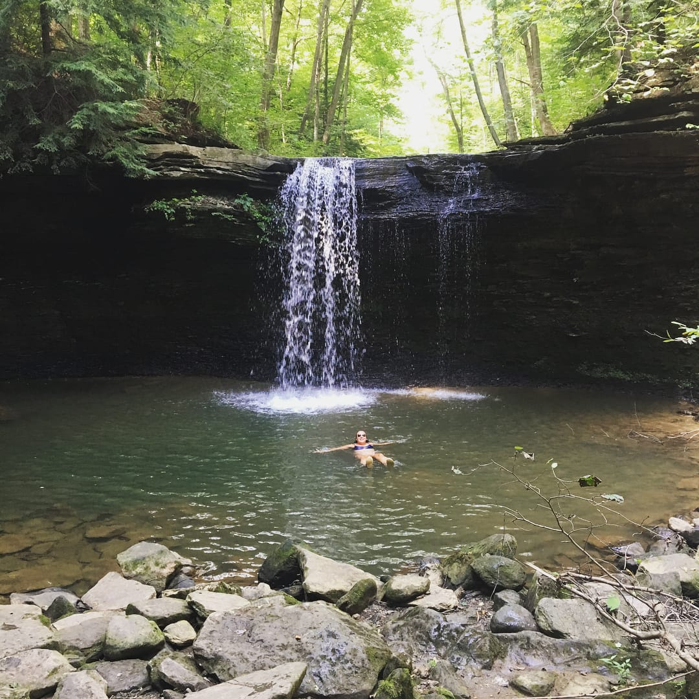
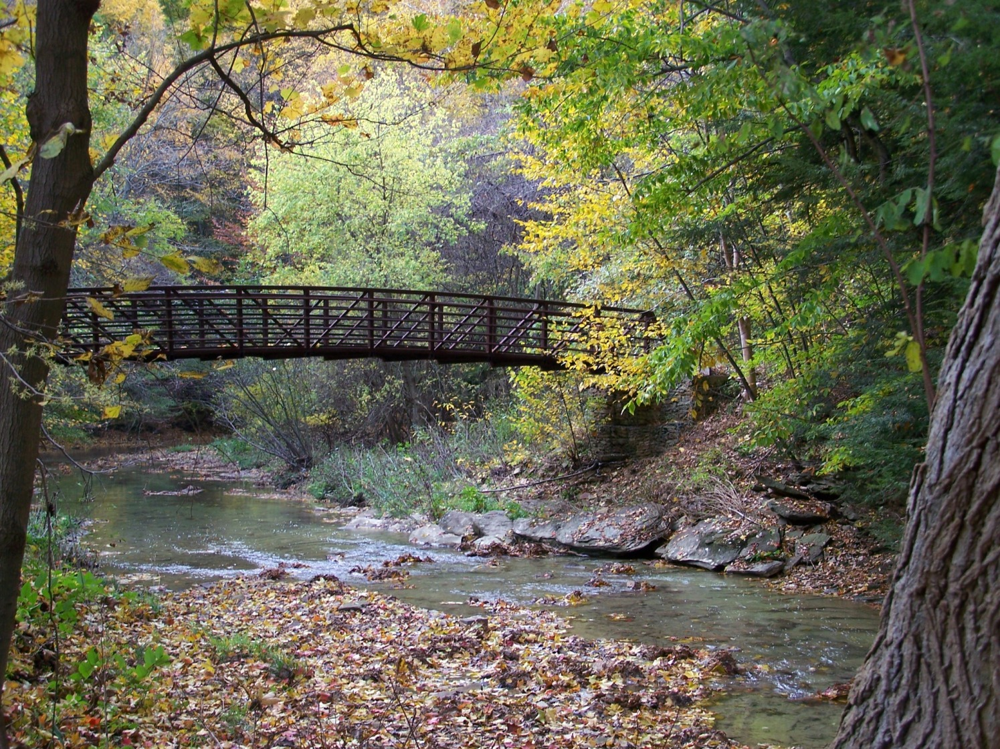
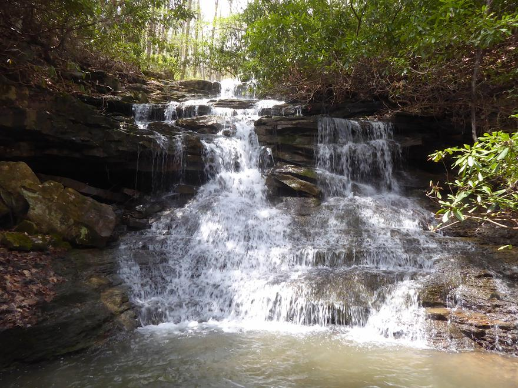

Hiking Recommendations
My home resides in Saltsburg, Pennsylvania. My cousins, sisters, friends and I enjoy hiking in different locations nearby. This page includes hiking trails I enjoy within an hour of Saltsburg, Pennsylvania. If you do not live near Saltsburg, I highly recommend downloading the app "All Trails". All Trails allows you to search for hiking trails near you with filters for personal preferences.

Jackson Falls is located in Apollo, Pennsylvania. The hike is 3.2 miles in length and is estimated to take an hour and thirty minutes. The hike follows the Jackson Falls waterfall series.

Duff Park is located in Murrysville, Pennsylvania. Duff Park includes many different hiking trails that all connect at some point. The longest possible hike of the connected trails is 3.4 miles long, estimated to take an hour and forty minutes, and an elevation gain of 341 feet.

Ohiopyle State Park is located in Ohiopyle, Pennsylvania. Ohiopyle consists of many different trails. I recommend the Great Gorge Trail, approximately 4.9 miles in length and an estimated two and a half hours. It features a waterfall. I also recommend Meadow Run Trail, approximately 2.9 miles in length and an hour and a half long. The hike features two waterfalls.